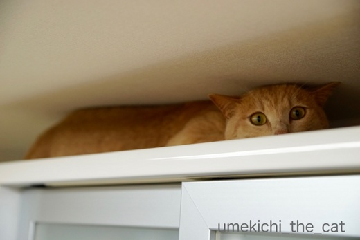
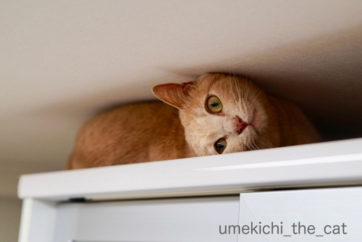
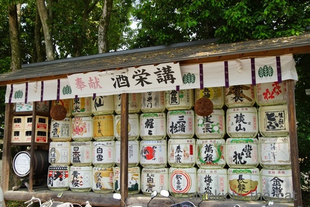
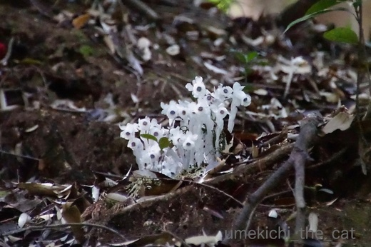
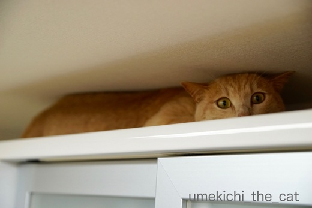
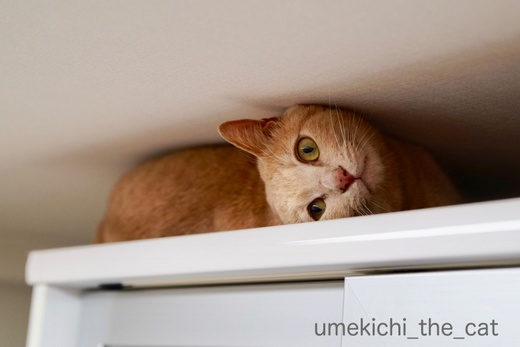
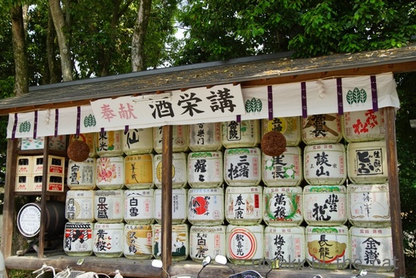
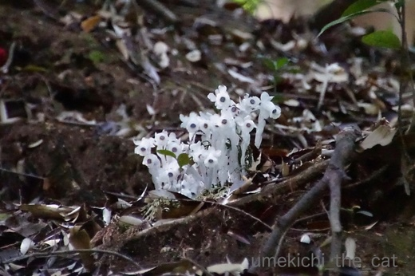

出るときのことは考えない [梅吉]
ゴソゴソ音がするので見に行くと

食器棚の上 にいたずら坊主(-_-メ)
そこはあんまり掃除しないからやめてって言ってるのに・・・

目がイッちゃってます(^▽^;)

出てきたら（梅吉＆食器棚の上）軽く拭かなくちゃと待ち構えているとズルズル出てきましたよー。
方向転換なんて出来るわけないから後ろにひたすらさがる。
どうやって出るか、どうやって降りるかなんて考えちゃいませんよね。
行きたいところがあったら進むのみ、登るのみ。
今日は追記の方がメインかも(^_－)☆
 ↑ガブッと一押し↑
↑ガブッと一押し↑
奈良、大神神社（おおみわじんじゃ）に行ってきました。

酒造の守護神としても知られるこの神社、入り口付近に奉納された酒樽が並んでいます。
ウィスキーの樽もありましたよ。中は入っているのかな？
神の中の神＝大神と言われるだけあって厳粛な雰囲気の漂う神社。
伊勢神宮と似た空気を感じました。
でも参拝者はカジュアルな雰囲気。
外国人観光客も見当たらなく賑わってはいますが落ち着いてます。
ドメスティックに親しみを持って信仰されている感じですね＾＾
山が御神体なので本殿はありません。
ここがメインの拝殿。ここからお山を参拝します。
この奥に拝殿と御神体である神聖なお山を区切る三輪鳥居があるのですが
ちょうど毎月１日の月次祭（つきなみさい）の最中で鳥居の拝観は出来ませんでした。
敷地内にある狭井神社（さいじんじゃ）。ご神水をいただきました。
口当たりが良くてまろやかな味のする水でしたよー。
ちょうどボトルを持っていたのでそちらにもたっぷりといただきました＾＾
御神体である三輪山へはここで入山の受付をします。
三輪山の入り口。
この向こうは空気が違う気がする・・・
入山には決まりごとがあります。三輪山登拝について。
軽い気持ちで入ってはいけない聖域なんですね。
こちらにも初心者の心得などが。
山の様子は撮影禁止でその道程もあまり人に語らない方が良いと言われています。
（webではそれなりの情報は入手できましたがw）
どんなお山なのかものすごく気になります！
いつか登って見たいなぁ。もう少し体力つけていつか挑みますよ。
詳細レポはしないと思いますが・・・

ギンリョウソウも咲いていました。
ニョロニョロみたい！！
敷地内で採れた南天の苗をおすそ分けしていました。
もちろんいただいてきましたよー。
たくさん実をつけて欲しいなぁ。
うちにある南天盆栽はちっとも花が咲かないのです。
ランチはもちろん三輪素麺。製麺会社直営のお店です。
ちゃんとしたお店でそうめん（にゅうめん）をいただくのは実は初めてです。
さすが、家で茹でたりカップ麺のものとは全然違います。
麺の茹で加減が絶妙です。ふにゃふにゃしていません。
お出汁もこれぞ関西だしって感じで美味しかったですよー。
この後長谷寺・室生寺に移動しましたが次回にアップしますね＾＾

食器棚の上 にいたずら坊主(-_-メ)
そこはあんまり掃除しないからやめてって言ってるのに・・・

目がイッちゃってます(^▽^;)

出てきたら（梅吉＆食器棚の上）軽く拭かなくちゃと待ち構えているとズルズル出てきましたよー。
方向転換なんて出来るわけないから後ろにひたすらさがる。
どうやって出るか、どうやって降りるかなんて考えちゃいませんよね。
行きたいところがあったら進むのみ、登るのみ。
今日は追記の方がメインかも(^_－)☆
奈良、大神神社（おおみわじんじゃ）に行ってきました。

酒造の守護神としても知られるこの神社、入り口付近に奉納された酒樽が並んでいます。
ウィスキーの樽もありましたよ。中は入っているのかな？
神の中の神＝大神と言われるだけあって厳粛な雰囲気の漂う神社。
伊勢神宮と似た空気を感じました。
でも参拝者はカジュアルな雰囲気。
外国人観光客も見当たらなく賑わってはいますが落ち着いてます。
ドメスティックに親しみを持って信仰されている感じですね＾＾
山が御神体なので本殿はありません。
ここがメインの拝殿。ここからお山を参拝します。
この奥に拝殿と御神体である神聖なお山を区切る三輪鳥居があるのですが
ちょうど毎月１日の月次祭（つきなみさい）の最中で鳥居の拝観は出来ませんでした。
敷地内にある狭井神社（さいじんじゃ）。ご神水をいただきました。
口当たりが良くてまろやかな味のする水でしたよー。
ちょうどボトルを持っていたのでそちらにもたっぷりといただきました＾＾
御神体である三輪山へはここで入山の受付をします。
三輪山の入り口。
この向こうは空気が違う気がする・・・
入山には決まりごとがあります。三輪山登拝について。
軽い気持ちで入ってはいけない聖域なんですね。
こちらにも初心者の心得などが。
山の様子は撮影禁止でその道程もあまり人に語らない方が良いと言われています。
（webではそれなりの情報は入手できましたがw）
どんなお山なのかものすごく気になります！
いつか登って見たいなぁ。もう少し体力つけていつか挑みますよ。
詳細レポはしないと思いますが・・・

ギンリョウソウも咲いていました。
ニョロニョロみたい！！
敷地内で採れた南天の苗をおすそ分けしていました。
もちろんいただいてきましたよー。
たくさん実をつけて欲しいなぁ。
うちにある南天盆栽はちっとも花が咲かないのです。
ランチはもちろん三輪素麺。製麺会社直営のお店です。
ちゃんとしたお店でそうめん（にゅうめん）をいただくのは実は初めてです。
さすが、家で茹でたりカップ麺のものとは全然違います。
麺の茹で加減が絶妙です。ふにゃふにゃしていません。
お出汁もこれぞ関西だしって感じで美味しかったですよー。
この後長谷寺・室生寺に移動しましたが次回にアップしますね＾＾
2018-05-04 11:38
nice!(56)
コメント(24)

カフェオレ色の梅吉

梅吉 2023年8月10日 永眠


梅吉と出会った譲渡会

犬猫の理由なき殺処分ゼロ
妄想広告
UMEKICHI 光

爆発的に早い！
時々攻撃的！
Thanks to Mr.Boss365
爆発的に早い！
時々攻撃的！
Thanks to Mr.Boss365

後ずさり動画、笑える〜（≧∇≦）
無事、脱出のあとのドヤ顔もナイスです！！
by よーちゃん (2018-05-04 12:15)
最初の3枚も自慢げな感じでドヤ顔かと思いましたが、たしかに脱出後も(^_^;)
山そのものが御神体のところは、そこはかとなく厳かな空気が流れている感(^^)
ギンリョウソウ、狭いとこに皆でくっ付き合ってる感じで、可愛いです(〃'∇'〃)
by middrinn (2018-05-04 12:28)
梅吉君、食器棚の上の隙間の埃を、
体を使ってお掃除ご苦労様でした。
大神神社、行ったことはないけれど、
写真からでも、「清澄な気」が伝わってくるように思いました。
山自体がご神体なんて、大聖域ですね。
by うめむす (2018-05-04 13:13)
ずるずる後退する梅吉君の真剣な顔がツボだわｗｗ
大神神社は、ぜひとも参拝したい場所です。そのときは絶対入山して参拝する！
昔は靴も脱いで入山したって本で読みました。
今はさすがにそれは大丈夫だよね。
三輪山の考古学＆神話系のオハナシ、めっちゃ面白いです。
おもしろいなんて言ったら大物主さんに怒られちゃうか。
by リュカ (2018-05-04 15:17)
梅吉さん、真剣な顔して、挟まれてスリスリして楽しそうです（笑）
で、いつの間にか脱出してました。
本家本元の三輪素麺は美味しかったでしょうね。
訪れた時には是非食べますよ。
三輪山は気になっていました。
近くに住んでいるのに腰が上がりません。
足腰の丈夫なうちにと思っています。
そう言ってる間に歳をとります（笑）
by kiki (2018-05-04 17:39)
梅吉さんったらイタズラっこですねぇ～(#^.^#)
それがまた可愛いのですが
どうやって出て来るのか、じっと見ちゃいました（笑
いっちゃっているおめめも
どや顔も可愛くてたまりません！
by きぃ (2018-05-04 17:47)
狭いところ好き！
by U3 (2018-05-04 17:57)
前に進んでたれ下がるのを期待しましたがそれは無理でしたか。綺麗になったからもう拭かなくて良いですね~。
by zombiekong (2018-05-04 18:08)
梅吉さん、すかｋりモップ状態ですね。
降りる姿がまたかわいい(^^)
by kou (2018-05-04 18:29)
大神神社、日本で一番古い神社ですね！
山に登ると不思議な事が沢山あるとの噂ですね(^^)
by ma2ma2 (2018-05-04 19:34)
梅吉さん、頭ぺったんこ(*^▽^*)
かなり必死のはずなのに何事もなかったようなドヤ顔がまた可愛くてたまりませんね♪
関西に住んでいるとこの辺りは遠足で行くのですが、何にもわからずにただ行っただけ。大人になってからちゃんと行きなおさなきゃと思ってます。
ニョロニョロみたいなギョリンソウ、面白いですね！
信州など高い山にしか生息していないのかと思ってました^^；
by ゆきち (2018-05-04 21:04)
梅吉さん、その場所は入る時にも苦労されたんじゃw
ニャンコってどうしてこう言う隙間に入ろうとするんですかねぇ(⌒-⌒; )
うちはどの子も規格外に育ったので、こう言う場所に入れなくなって
助かってる時もありますw
三輪山、厳かな空気感が漂ってさすが神体山ですね( ^ω^ )
一度登ってみたいです＾＾
by ニッキー (2018-05-04 21:58)
人にまとわりつかず、一人でごぞごぞとしているときは間違いなくいたずらしていますよね(*^-^*)
「入れたんだから出れるに決まってるにゃ！」ごそごそ、もぞもぞ。
可愛い梅吉くんです。
三輪山登拝。神聖な場所に足を踏み入れるのですから軽い気持ちではいけないのですね。
体力をつけてぜひ挑戦してみてください。
by emi (2018-05-04 22:43)
ひょっとして、梅吉さんの大好きな7cmの隙間！？^^;
得意げにキョロキョロしている表情が可愛いですね。
ギンリョウソウ、たしかにニョロニョロですね。^^)
by yes_hama (2018-05-05 00:58)
動画を見て侵入経路が分かりました。
たぶん、お掃除のお手伝いをしてくれてるんですよ＾＾
by ぽちの輔 (2018-05-05 06:20)
梅吉さん、いたずら坊主のお顔が可愛い～＾＾
顔傾けると顔の幅ちょうどなんですね。
あれ、にゃんだこれ、動けへんわ～ずりずりと下がって、やったぜのドヤ顔ー＾o＾
楽しい動画☆梅吉さん、自然なままで役者ですのう＾＾
大神神社でおおみわじんじゃなのですね。
風格があるのが伝わってきます。
三輪そうめんは毎年頂いてます＾＾
by sana (2018-05-05 12:02)
なんで、また、そんな狭きへニョロニョロと〜
猫は、アタマさえ通ればOKって、実証してくれてますね(^_^;
「三輪山登拝」･･･なんか、スゴい体験ができそう♡
by のらん (2018-05-05 12:04)
なぜ後先を考えずとりあえずやってみちゃうのか。
それはねこだから。(｡-_-｡)
梅さま、すごい場所に気づいちゃいましたね。
しかしここでは寛げなさそう^^;
ギンリョウソウすごいですね。初めて知りました。
実際に見てみたい〜〜（チンアナゴっぽくもある？）
三輪素麺の本拠地！写真奥のは・・・柿の葉寿司？
by Ja-Kou66 (2018-05-05 18:00)
そうそう前しか見てませんよね。「それ、そのあとどうするつもりなん？」ってことよくあります(*^^*）横向いちゃってる梅吉くん出てこれてよかったね～
by palpal (2018-05-05 20:42)
上手に後ずさりですねー^^
by ryang (2018-05-06 23:20)
神の中の神。山がご神体なのですねー。
こうした由緒ある場所って、昔（若いころ）はサラーっと見て満足だったけど、
近年はじーっくり見て、聞いて、覚えて、記憶に刻んでいくのが楽しくなりました。
きっと、昔はどこか他人事だったけど、歳を重ねるとありがたくなるからでしょうかねぇ。
お裾分けの苗、元気に育ってほしいですね(^^♪
梅吉さん。行きはよいよい、帰りは難儀、やでぇ～♪ｗｗｗ
by morichan (2018-05-07 14:14)
よーちゃん＞
何ドヤ顔しているのよーって感じでした(-_-メ)
この後とっ捕まえてふきふきしてやりましたwww
middrinnさん＞
そう！絶対自慢していますw
何が自慢なのか梅吉に聞きたいわー(^▽^;)
三輪山に登ると色々不思議な出来事があるらしい・・・
ネットで流布している話は話半分に見ておりますが
何か感じるところがありそうなのは確かかなと思っています！
ギンリョウソウみたいな不思議な花が咲くのも
雰囲気満点ですよね＾＾そのうち登るぞー(๑•̀ㅂ•́)و✧
うめむすさん＞
全身モップ参上！！って感じでしょうか(*>艸<)
私は姑さんって呼んじゃいましたーwww
三輪山は実際に見ると本当に敬虔な気持ちになりますよ。
ここには何かおわします、って感じです。
500m弱のそれほど高い山ではありませんが
山頂付近は急峻なんだとか。
足腰鍛えなおさなくっちゃ！
リュカさん＞
三輪山、現在はくつばきOKですが裸足でチャレンジする方も
いらっしゃるそうですよ(・o・)
私は足の裏あんまり鍛えてないから（素足が苦手w）
裸足はダメだわー。踏ん張りがきかなそうだしwww
山頂付近はぬかるんでたり急だったりするらしい・・・
三輪山近辺は考古学＆神話系いろいろ
いわくありげな（神様に失礼！！）土地柄ですものね。
大神神社の敷地からは大和三山とその間を抜けて
離れたところに（小さく）橿原神宮が望めます。
そんな立地もなんか意味深！！
kikiさん＞
狭いところ、秘密の探検でもしている気分なのでしょうか。
ず〜っと見られていたのに(*>艸<)
大神神社の後に長谷寺、室生寺を回ったのですが
山にあるお寺はどこもたくさん階段を上がります。
ぜひぜひ元気に歩けるうちに行っていただきたいです！
若くても運動不足そうな人は「まだ階段あがるのー？」って
ブーたれていましたよw
寺院巡りは元気なうちにこそ楽しめるものだと思っていますよー＾＾
きぃさん＞
いたずらっ子過ぎます！
どこで何をするか分からないので
視界から消えたらまず
居場所を確認するのが癖になっていますよw
で、何かしでかそうとしている時ほど
「きゅるん」と可愛い目で見返して来ます (⌒_⌒;
ずるいよねー！！
U3さん＞
狭いところ、無理そうな所ほど大好きです！
梅吉が入りそうな隙間は掃除する日々ですwww
zombiekongさん＞
前に進むのがしんどくなったと思われます(*>艸<)
「むかしは すすめたのに なんでや なんでや！」
と思いながらさがって来たのだと思いますよー。
うん・・・実は拭いていません(〃▽〃)
kouさん＞
全身モップですw
どうせなら年末にお手伝いして欲しいのですが
年末は違うお手伝いに忙しく思うように動いてくれません(-_-メ)
ma2ma2さん＞
三輪山での不思議な出来事色々見ました！
私も体験してみたいな。でも皆さんにはお話しないかな。
お話しない方が良さそうな気もするし！！
ゆきちさん＞
まあるい後頭部も好物ですが
頭ぺったんこも好きで、好きでＯ(≧▽≦)Ｏ
ぺったんこになっているときは走って見に行っちゃいますw
大神神社に行ったのは連休谷間の平日だったので
学校の遠足みたいな子たちが来ていましたよー。
私も高校の修学旅行でせっかく京都にいるのに
自由行動時は神戸に異人館を見に行った口なので
その思い良くわかります！！
もったいないですよねー。
今大阪に住んでそのリベンジが出来ているのは嬉しい限りです＾＾
ニッキーさん＞
大御所様はじめみなさまお体の割には（失礼！）
ちゃんとアタマは小さいので隙間には入れるのかもしれませんよ！
アマタが通ればOKらしいですから・・・
油断されない方が良いかも(*>艸<)
日頃体を鍛えていらっしゃるニッキーさんだから
三輪山も短時間で登拝されそう！
どうぞ、天狗と呼ばれてください(^_－)☆
emiさん＞
そうそう！
寝ているとき以外に一人で静かだと間違いなくいたずらしています (-_-メ)
夜もいつまでも私のベッドに寝に来ないと
何いたずらしているんだろうと気になって気になって・・・
様子を見に行くと「あそんでくれるんかー！」とガブってくるので
危険だしwww
三輪山登拝、
体も鍛えて気持ちも新たにトライして見たいと思っています＾＾
by ちぃ (2018-05-07 16:09)
yes_hamaさん＞
それです！！スキマスキーです(*>艸<)
スキマブームは去ったと思ったのに。時代は巡るんですねぇ・・・
ギンリョウソウ、ムーミンの国でも生えていたのかしらね＾＾
ぽちの輔さん＞
大変ありがたいお手伝いですー（棒読み）
我が家では「お姑さん」と呼びましたw
「ちょっとー、ここ掃除してないのかしら？」
みたいなwww
sanaさん＞
探検でもしている気分だったのでしょうか。
無理な所ほど楽しい！って感じでしたよー＾＾
三輪そうめん、播州そうめん
家で食べると違いがよくわかりませんが
このお店で食べたのは他とは違うな！と思いましたよ。
雰囲気にのまれやすいタイプなのでしょうか(〃▽〃)
のらんさん＞
「そこに すきまが あったからや」と梅吉が申しております(*>艸<)
三輪山、いろいろ不思議なことがあるらしい・・・
私は登拝した後多くを語らないでおきます！
その方が神秘的でしょーＯ(≧▽≦)Ｏ
たとえ不思議体験がこれっぽっちもなかったとしても・・・
by ちぃ (2018-05-07 16:28)
Ja-Kou66さん＞
興味の対象以外は見えなくなっちゃいますよね、猫様は(^▽^;)
ずるずるさがった先の足場の冷蔵庫の上がくつろぎポイントなので
目の前の食器棚の上の隙間は格好の探検ポイントだったようです。
時々入りたくなるらしい・・・
そのスイッチがどこにあるのかは不明ですがw
三輪そうめんの奥はそうです！柿の葉寿司！！
近所のデパートでも買えますが奈良に来ると食べたくなります。
ただ、大手の柿の葉寿司の方が美味しかったですよ（ｺｯｿﾘ・・・）
palpalさん＞
「そのあとどうするつもりなん？」でナノくんは助けを求めますが
梅吉は向こう見ずに飛び降りたりしちゃうので
怪我する前に、とレスキューに走らなきゃなりませんw
この日も食器棚の上から落ちて来たら怖いので
見張っていたのが実情です。
その割にはカメラ構えているけどwww
ryangさん＞
いつも無理そうな所を果敢に攻めるので
後ずさりも慣れたものです(^▽^;)
morichanさん＞
若い頃はまた来れる、って簡単に言えますが
ある程度歳を取って来ると「もう来られないかも・・」って
心のどこかで思ってしまうのかも(^▽^;)
あれこれ見て感じ入ることが多いのは
人生において（ｶｯｺｲｲ(〃▽〃)）色々蓄積して来て
理解力が上がっているのかな、とも思っています＾＾
お裾分けの苗を選んでいるとき
「枯れたらむっちゃ縁起悪いやん！」って
言っている人いましたよ(⌒_⌒;
確かに！！枯らさないように頑張ります(๑˃̵ᴗ˂̵)و
by ちぃ (2018-05-07 17:56)